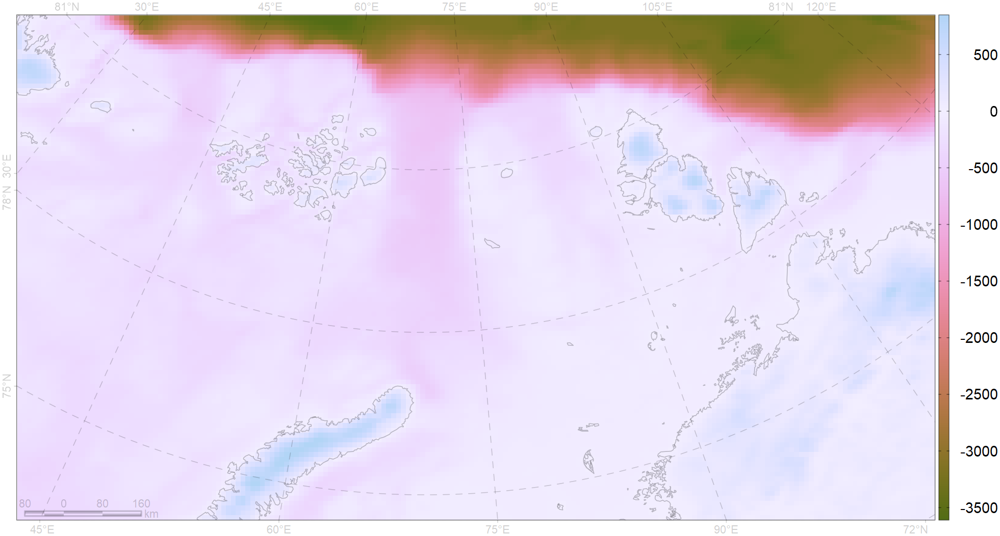
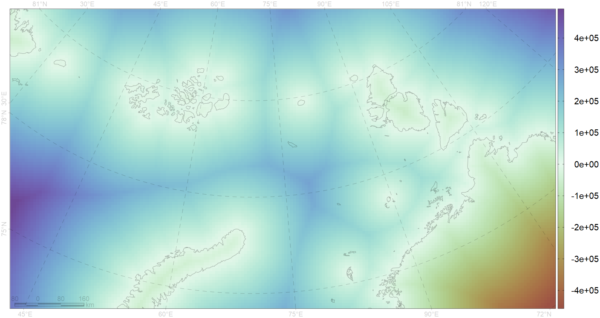
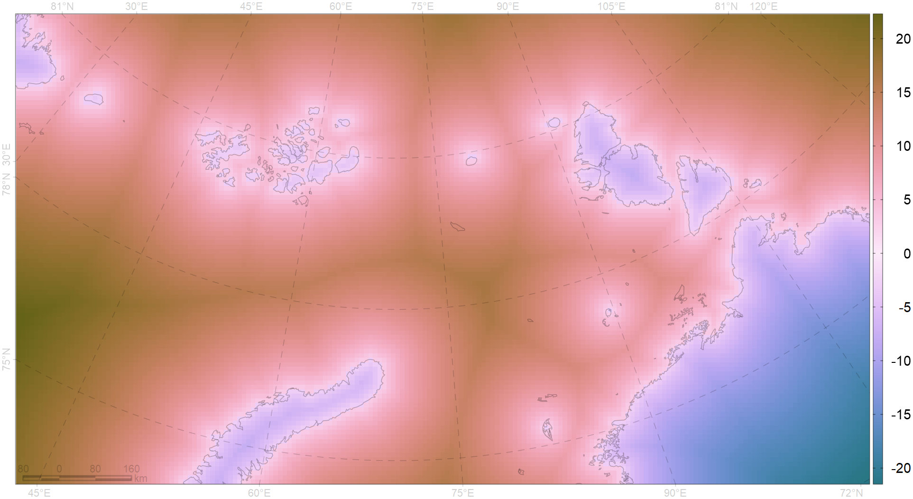
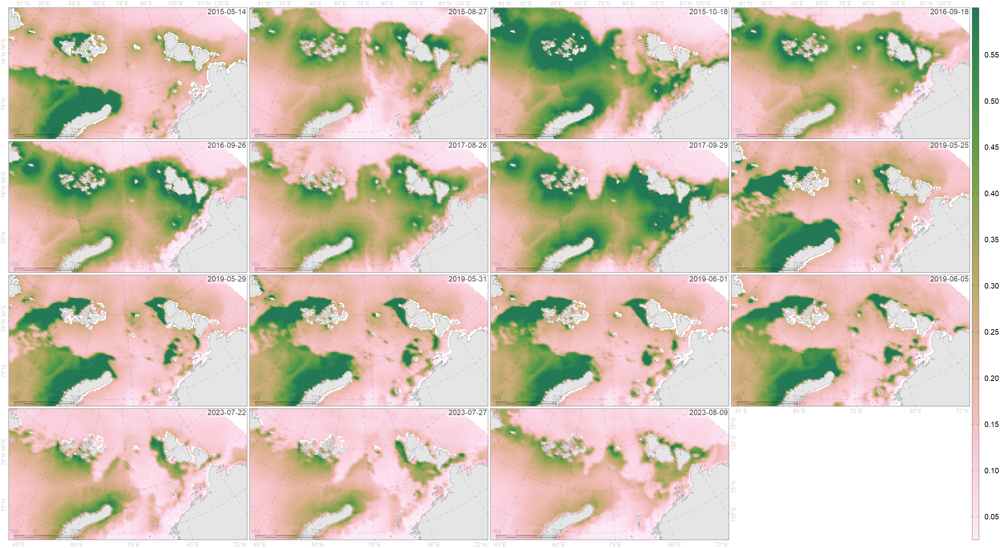

Задать директорию, в которой хранятся исходные данные, включая таблицу с находками и директорию исходники c растрами.
Будем создавать многослойные (multiband) растры, в которых названия слоёв будут датами будут в формате "2024-02-29"; это определяется значение переменной bandfmt.
По расстоянию будем считать, что если у нас 10 или 15 км, то это важное отличие, а когда 150 или 200, то уже и не такое важное, потому что и так достаточно большое, поэтому зададим возведение в степень (типа, логарифм, не совсем, конечно, но достаточно близко).
Уровень береговой линии по значениям GEBCO. То, что меньше coast – это море; то, что вышел coast – это суша.
Используется версия пакета ursa, которой нет в CRAN.
Как вариант (Windows), можно создать в root директорию libs и распаковать туда ursa_3.11.0-1078.zip. Должно быть что-то наподобие D:/ongoing/byk/libs/ursa и внутри распакованный пакет.
if (!exists("ursa")) {
opW <- options(warn=-1)
require(ursa,lib.loc=file.path(root,"libs"))
options(opW)
}Loading required package: ursaДалее определим несколько функций, так как эти действия выполняются более одного раза
изИсходников() читает растры и преобразует в координатную сетку сессии
'изИсходников' <- function(pattern="\\.tif",dates=NA,nodata=NA,resample="near") {
if (hasSeries <- !is.na(dates)) {
fmtdate <- dates
fmtdate <- gsub("%Y","\\\\d{4}",fmtdate)
fmtdate <- gsub("%y","\\\\d{2}",fmtdate)
fmtdate <- gsub("%m","\\\\d{2}",fmtdate)
fmtdate <- gsub("%d","\\\\d{2}",fmtdate)
}
list1 <- dir(path=file.path(root,"исходники"),pattern=pattern,full.names=TRUE)
if (hasSeries) {
bname <- as.Date(gsub(paste0(".*(",fmtdate,").*"),"\\1"
,basename(list1)),format=dates)
res <- ursa(bandname=format(bname,bandfmt))
}
else
res <- ursa(bandfname=basename(list1))
opW <- options(warn=-1)
for (i in seq(res) |> sample()) {
a <- ursa:::.gdalwarp(list1[i],resample=resample)
if (isTRUE(nodata>0))
a[a>nodata] <- NA
else if (isTRUE(nodata<=0))
a[a<=nodata] <- NA
res[i] <- a
}
options(opW)
res
}environ() соотносит коррдинатам находок и псевдонаходок значения параметров окружающей среды
'environ' <- function(loc,env,maxD=9999) {
res <- resD <- rep(NA,spatial_count(loc))
env <- env[!band_blank(env)]
d4 <- as.Date(names(env),bandfmt)
if (hasDate <- !anyNA(d4))
ind <- sapply(loc$date,\(d3) which.min(abs(d3-d4)))
else
ind <- rep(1L,spatial_count(loc))
p <- polygonize(env) |> spatial_centroid()
for (i in unique(ind) |> sample()) {
j <- which(ind==i)
p2 <- p[!is.na(p[[i]]),i]
d <- ursa:::.dist2(loc[j,],p2,summarize=FALSE,verbose=FALSE)
res[j] <- p2[[1]][d$ind]
resD[j] <- d$dist*1e-3
}
if (isTRUE(maxD>0)) {
res[resD>maxD] <- NA
return(res)
}
val <- as.character(as.list(match.call())[["env"]])
valD <- paste0(env,"D")
loc[[val]] <- res
loc[[valD]] <- resD
loc
}‘dist2border()’ – вспомогательная функция оценки расстояния до разделителя. Например, если разделитель – береговая линия, то расстояние с акватории и расстояние с суши будет иметь различные знаки. Если неважен субстрат, то можно применить впоследствии abs().
'dist2border' <- function(obj,border) {
d1 <- obj>=border
d2 <- obj<border
local_sum(c(ursa:::.dist2(d1,d2)["dist"],-ursa:::.dist2(d2,d1)["dist"]),cover=0)
}dist2edge() – в случае с концентацией льда определяет минимальную дистанцию до значения корнцентрации льда, заданного величиной th, и в зависимости от начального субстрата у результата будет различный знак.
'dist2edge' <- function(obj,th) {
edge <- ursa(bandname=names(conc))
for (i in seq(conc) |> sample())
edge[i] <- dist2border(conc[i],th)
edge <- sign(edge)*abs(edge*1e-3)^distpower
edge
}matchDate() - вспомогательая функция, чтобы к дате концентрации льда подобрать дату хлорофилла (температуры, солености – любых нерегулярных). Здесь просто - ближайший день. Но можно усложнить через временную интерполяцию и кригинг.
Зададим случайное число от 100 до 999 для псеводгенератора случайных чисел. Если зафиксировать это число, например, seed <- 933, то результат будет (должен быть) одним и тем же при разных прогонах.
seed
221 Чтение исходной таблицы и ее преобразование в пространственные данные.
# getOption("error")
loc <- read.csv(file.path(root,"Bowhead_whale.csv"),sep=";",dec=".")
loc <- ursa:::spatialize(loc,style="laea",lon0=70,lat0=80)
loc$date <- as.Date(loc$date,format="%d.%m.%Y")Уберем лишние столбцы
В поле pa присутствие - 1, псевдоотсутствие - 0
Сформируем координатную сетку и сделаем ее сессионной. В дальнейшем преобразование координатных сеток будет осуществляться к сессионной координатной сетке. Размер ячейки 10 км, а пространственный охват расширен в полтора раза.
List of 9
$ columns: int 189
$ rows : int 104
$ resx : num 10000
$ resy : num 10000
$ minx : num -840000
$ maxx : num 1050000
$ miny : num -610000
$ maxy : num 430000
$ crs : chr "laea lon_0=70 lat_0=80 'WGS 84'"
- attr(*, "class")= chr ".ursaGrid"Сделаем прореживание точек, расположенных близко друг к другу. Тут несколько упрощено, так как прореживать нужно точки за близкие даты, когда условия окружающей среды, даже распределение льда, схожие.
if (T) {
loc <- ursa:::spatialize(loc,engine="sp")
gr <- as.data.frame(g1)
sp::coordinates(gr) <- c("x","y")
sp::proj4string(gr) <- sp::proj4string(loc) # sf::st_crs(spatial_crs(loc))$proj4string
sp::gridded(gr) <- TRUE
opW <- options(warn=-1)
hr <- adehabitatHR::kernelUD(loc
,grid=gr
,h=list("href","LSCV",10000)[[1]]
,kern=c("bivnorm","epa")[1] ## 1$1 2$1 1$2
,hlim=c(0.1,1.5) ## for h=LSCV, default
# ,hlim=c(0.4,1.2) ## for h=LSCV
# ,extent=2 ## ignored if !missing(grid)
)
options(opW)
h <- hr@data[[1]]
dim(h) <- dim(g1)
h <- ursa_new(t(h)*1e12,flip=TRUE)^0.5
kd <- value_xy(h,spatial_coordinates(loc))[1,] |> ceiling()
omit <- sapply(kd,\(x) sample(seq(x))[1]!=1)
print(table(omit))
loc <- ursa:::spatialize(loc[!omit,],engine="sf")
}Registered S3 methods overwritten by 'adehabitatMA':
method from
print.SpatialPixelsDataFrame sp
print.SpatialPixels sp omit
FALSE TRUE
68 123 Преобразуем данные GEBCO в нашу сетку. Точки будет формировать лишь для тех ячеек, для которых GEBCO менее двух метров
name mean sd sum min max n nNA
[1] gebco -450.709 901.917 -8859133 -3688 869 19656 0
На каждую дату добавим семь точек псевдоотсутствия
sea <- as.data.frame(gebco<coast)[,1:2]
ind <- seq(nrow(sea))
absence <- lapply(unique(loc$date),\(d) {
data.frame(date=d,pa=0L,sea[sample(ind,7),])
}) |> do.call(rbind,args=_) |> ursa:::spatialize(crs=spatial_crs(loc))
session_grid(g1) ## восстановление сессионной сеткиОбъединим присутствие и псевдоотсутствие
0 1
105 68 Расстояние до берега по значениям GEBCO, превышающих +2 метра.
land <- gebco>=coast
sea <- gebco<coast
if (F) # если только для модели, то можно так
loc$dist2land <- (ursa:::.dist2(loc,land,summarize=FALSE,verbose=FALSE)$dist*1e-3)^distpowerРастр необходим, если по модели будем строить предсказание
Расстояние до берега as is

Преобразованное расстояние до берега, используемое в модели

Кромку льда определим по различным уровням концентрации – 15, 30, 50 и 75%.
if (T) {
chlo <- 'изИсходников'("CHLORA.+\\.TIFF$","%Y-%m-%d",nodata=90000,resample="near")
loc$chlo <- environ(loc,chlo,300)
salt <- 'изИсходников'("salt.+\\.tif$","%y%m%d",nodata=0,resample="near")
loc$salt <- environ(loc,salt,200)
temp <- 'изИсходников'("temp.+\\.tif$","%y%m%d",nodata=NA,resample="near")
loc$temp <- environ(loc,temp,100)
}В модели не используются пространственный координаты, поэтому их отсекаем.
Если захочется сохранить таблицу с находками, псевдонаходками и предикторами, то установить needToSaveThisData в TRUE. Суффиксом указано значение seed, на основе которого задан генератор псевдослучайных чисел. Чтобы сохранить предикторы, использовать функцию ursa_write(), которая есть в пакете ursa. В имени файла указать расширение *.tif (один многослойный растр) или *.zip (архив однослойных растров).
if (needToSaveThisData <- FALSE) {
write.table(da,paste0("balaena",seed,".csv"),row.names=FALSE,quote=FALSE,sep=";",dec=".")
# ursa_write(conc,"conc.tif")
# ursa_write(conc,"conc.zip")
}И даты тоже не нужны.
Уберем стоки, в которых есть NA. Это, по-моему, из-за хлорофилла. Если не подгружать хлорофилл, то строчки останутся, но в модели будет на один предиктор меньше.
pa gebco dist2land conc edge15 chlo
Min. :0.0000 Min. :-3467.0 Min. : 3.162 Min. : 0.0 Min. :-20.506 Min. : 0.0297
1st Qu.:0.0000 1st Qu.: -349.0 1st Qu.: 6.687 1st Qu.: 0.0 1st Qu.: -7.746 1st Qu.: 0.2524
Median :0.0000 Median : -218.0 Median : 9.516 Median : 0.0 Median : -4.472 Median : 0.5657
Mean :0.3931 Mean : -380.5 Mean : 9.895 Mean : 25.2 Mean : -1.992 Mean : 1.3176
3rd Qu.:1.0000 3rd Qu.: -105.0 3rd Qu.:13.038 3rd Qu.: 40.0 3rd Qu.: 4.472 3rd Qu.: 1.5517
Max. :1.0000 Max. : -7.0 Max. :21.996 Max. :100.0 Max. : 32.374 Max. :13.3107
NA's :15
salt temp
Min. :24.92 Min. :-2.0266
1st Qu.:32.59 1st Qu.:-1.6984
Median :34.00 Median : 0.1612
Mean :33.27 Mean : 0.5542
3rd Qu.:34.50 3rd Qu.: 1.5873
Max. :34.95 Max. : 8.7696
Call:
glm(formula = pa ~ ., data = da)
Coefficients:
Estimate Std. Error t value Pr(>|t|)
(Intercept) -1.389e+00 8.501e-01 -1.634 0.10429
gebco -6.256e-05 6.668e-05 -0.938 0.34964
dist2land -2.979e-02 1.017e-02 -2.929 0.00393 **
conc -6.508e-03 2.130e-03 -3.055 0.00266 **
edge15 3.807e-03 1.026e-02 0.371 0.71110
chlo 3.322e-02 2.327e-02 1.428 0.15539
salt 6.665e-02 2.407e-02 2.769 0.00633 **
temp -3.982e-02 1.943e-02 -2.050 0.04215 *
---
Signif. codes: 0 '***' 0.001 '**' 0.01 '*' 0.05 '.' 0.1 ' ' 1
(Dispersion parameter for gaussian family taken to be 0.1766972)
Null deviance: 38.076 on 157 degrees of freedom
Residual deviance: 26.505 on 150 degrees of freedom
(15 observations deleted due to missingness)
AIC: 184.31
Number of Fisher Scoring iterations: 2
Call:
lm(formula = pa ~ ., data = da)
Residuals:
Min 1Q Median 3Q Max
-0.80597 -0.34251 -0.02026 0.28475 0.96942
Coefficients:
Estimate Std. Error t value Pr(>|t|)
(Intercept) -1.389e+00 8.501e-01 -1.634 0.10429
gebco -6.256e-05 6.668e-05 -0.938 0.34964
dist2land -2.979e-02 1.017e-02 -2.929 0.00393 **
conc -6.508e-03 2.130e-03 -3.055 0.00266 **
edge15 3.807e-03 1.026e-02 0.371 0.71110
chlo 3.322e-02 2.327e-02 1.428 0.15539
salt 6.665e-02 2.407e-02 2.769 0.00633 **
temp -3.982e-02 1.943e-02 -2.050 0.04215 *
---
Signif. codes: 0 '***' 0.001 '**' 0.01 '*' 0.05 '.' 0.1 ' ' 1
Residual standard error: 0.4204 on 150 degrees of freedom
(15 observations deleted due to missingness)
Multiple R-squared: 0.3039, Adjusted R-squared: 0.2714
F-statistic: 9.355 on 7 and 150 DF, p-value: 1.352e-09m3 <- try(nls(pa~exp(a0+
a_conc*conc+
a_gebco*gebco+
a_dist2land*dist2land+
a_edge15*edge15+
a_salt*salt+
a_temp*temp+
# a_chlo*chlo+
0)
,data=da
,start=list(a0=1e-4
,a_conc=1e-4
,a_gebco=1e-4
,a_dist2land=1e-4
,a_edge15=1e-4
,a_salt=1e-4
,a_temp=1e-4
# ,a_chlo=1e-4
)
,control=nls.control(maxiter=150)
))
summary(m3)
Formula: pa ~ exp(a0 + a_conc * conc + a_gebco * gebco + a_dist2land *
dist2land + a_edge15 * edge15 + a_salt * salt + a_temp *
temp + 0)
Parameters:
Estimate Std. Error t value Pr(>|t|)
a0 -8.8916879 2.8859585 -3.081 0.00242 **
a_conc -0.0160572 0.0071708 -2.239 0.02647 *
a_gebco -0.0001256 0.0003571 -0.352 0.72543
a_dist2land -0.0763516 0.0314697 -2.426 0.01633 *
a_edge15 0.0051006 0.0353632 0.144 0.88549
a_salt 0.2673671 0.0847189 3.156 0.00190 **
a_temp -0.1591768 0.0595640 -2.672 0.00828 **
---
Signif. codes: 0 '***' 0.001 '**' 0.01 '*' 0.05 '.' 0.1 ' ' 1
Residual standard error: 0.4154 on 166 degrees of freedom
Number of iterations to convergence: 82
Achieved convergence tolerance: 9.487e-06Выберем одну из моделей, например, m3
opW <- options(warn=-1)
cname <- names(conc)
preferred <- ursa(bandname=cname,nodata=-99)
for (i in seq(conc) |> sample()) {
j <- matchDate(salt,cname[i])
b <- c(result=ursa()
,gebco=gebco
,dist2land=dist2land
,conc=conc[cname[i]]
,edge15=edge15[cname[i]]
,salt=salt[matchDate(salt,cname[i])]
,temp=temp[matchDate(temp,cname[i])]
,chlo=chlo[matchDate(chlo,cname[i])]
)
p <- try(predict(m3,newdata=as.data.frame(b)))
if (inherits(p,"try-error"))
next
preferred[i] <- p
}
options(opW)
preferred |> print() name mean sd sum min max n nNA
[01] 2015-05-14 0.267924 0.1984181 4074.05 0.013750920 1.379196 15206 4450
[02] 2015-08-27 0.239543 0.1362627 3842.99 0.001596471 1.010491 16043 3613
[03] 2015-10-18 0.334859 0.2065778 5324.59 0.002788165 1.289254 15901 3755
[04] 2016-09-18 0.262815 0.1452488 4220.28 0.000210802 1.063287 16058 3598
[05] 2016-09-26 0.278994 0.1721685 4482.32 0.000271837 1.100844 16066 3590
[06] 2017-08-26 0.253834 0.1351478 4064.89 0.000696563 0.768951 16014 3642
[07] 2017-09-29 0.318835 0.1914427 5089.24 0.001742193 1.219975 15962 3694
[08] 2019-05-25 0.279898 0.1951928 4270.96 0.013156507 1.629628 15259 4397
[09] 2019-05-29 0.265185 0.1891428 4040.89 0.006834633 1.283023 15238 4418
[10] 2019-05-31 0.275340 0.1882625 4190.12 0.009196532 1.322038 15218 4438
[11] 2019-06-01 0.271068 0.1865865 4115.08 0.007779874 1.174125 15181 4475
[12] 2019-06-05 0.264593 0.1731290 4037.42 0.008742157 1.079309 15259 4397
[13] 2023-07-22 0.173835 0.1076962 2731.47 0.000259737 0.672277 15713 3943
[14] 2023-07-27 0.158052 0.0974415 2492.47 0.000182422 0.642313 15770 3886
[15] 2023-08-09 0.163011 0.0979155 2609.31 0.000162895 0.628242 16007 3649
R version 4.3.3 Patched (2024-02-29 r86034 ucrt)
Platform: x86_64-w64-mingw32/x64 (64-bit)
Running under: Windows 10 x64 (build 19045)
Matrix products: default
locale:
[1] LC_COLLATE=English_United Kingdom.utf8 LC_CTYPE=English_United Kingdom.utf8
[3] LC_MONETARY=English_United Kingdom.utf8 LC_NUMERIC=C
[5] LC_TIME=English_United Kingdom.utf8
time zone: Europe/Moscow
tzcode source: internal
attached base packages:
[1] stats graphics grDevices utils datasets methods base
other attached packages:
[1] ursa_3.11.0-1078
loaded via a namespace (and not attached):
[1] sass_0.4.8 utf8_1.2.4 generics_0.1.3 tcltk_4.3.3
[5] class_7.3-22 KernSmooth_2.23-22 lattice_0.22-5 digest_0.6.34
[9] magrittr_2.0.3 evaluate_0.23 grid_4.3.3 plutil_0.9-7312
[13] fastmap_1.1.1 jsonlite_1.8.8 e1071_1.7-14 DBI_1.2.2
[17] fansi_1.0.6 crosstalk_1.2.1 CircStats_0.2-6 jquerylib_0.1.4
[21] ade4_1.7-22 cli_3.6.2 rlang_1.1.3 units_0.8-5
[25] cachem_1.0.8 yaml_2.3.8 tools_4.3.3 dplyr_1.1.4
[29] locfit_1.5-9.9 boot_1.3-30 png_0.1-8 adehabitatHR_0.4.21
[33] vctrs_0.6.5 R6_2.5.1 proxy_0.4-27 lifecycle_1.0.4
[37] classInt_0.4-10 leaflet_2.2.1 adehabitatMA_0.3.16 leaflet.providers_2.0.0
[41] htmlwidgets_1.6.4 MASS_7.3-60.0.1 adehabitatLT_0.3.27 pkgconfig_2.0.3
[45] xaringanExtra_0.7.0 pillar_1.9.0 bslib_0.6.1 glue_1.7.0
[49] Rcpp_1.0.12 sf_1.0-15 systemfonts_1.0.5 highr_0.10
[53] xfun_0.42 tibble_3.2.1 tidyselect_1.2.0 knitr_1.45
[57] htmltools_0.5.7 rmarkdown_2.25 svglite_2.1.3 compiler_4.3.3
[61] sp_2.1-3